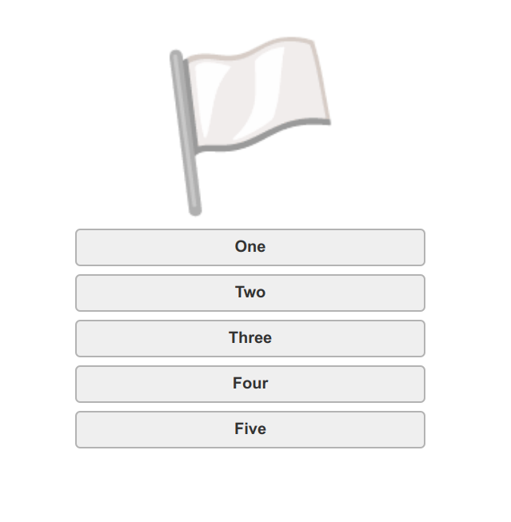

The Idea
We'll be building a flag guessing game. The player is presented with a flag and a multiple choice style list of answers.
Step 1. Basic structure
First off, we're going to need a list of countries and their respective flags. Thankfully, we can harness the power of emojis for displaying the flags, meaning we don't have to source or, even worse, create them ourselves. I've prepared this in JSON form.
At its simplest the interface is going to show a flag emoji and five buttons: 
A dash of CSS using grid to center everything and relative sizes so it displays nicely from the smallest screen up to the biggest monitor.
Grab a copy of our starter shim (step1.html). We will be building on this through out the tutorial.
The file structure for our project looks like this:
step1.html
step2.html // etc
js/
data.json
// more js files
helpers/
// we'll get to this in step 3.
css/
i/
At the end of each section there will be a link to the our code in it's current state.
Step 2. A Simple Prototype
Let's get cracking. First off, we need to grab our data.json file
async function loadCountries(file) {
try {
const response = await fetch(file);
return await response.json();
} catch (error) {
throw new Error(error);
}
}
// data.json contains an array of objects that looks like this:
// { flag: , name: }
loadCountries('./js/data.json')
.then((data) => {
startGame(data.countries)
});
Now that we have the data, we can start the game. The following code is generously commented. Take a couple of minutes to read through and get a handle on what is happening.
function startGame(countries) {
// we want a randomized list of countries
// first, get all the keys from our JSON object
// now shuffle
shuffle(countries);
// pick answer
let answer = countries.shift();
// pick 4 more countries, merge our answer and shuffle
let selected = shuffle([answer, ...countries.slice(0, 4)]);
// update the DOM, starting with the flag
document.querySelector('h2.flag').innerText = answer.flag;
// update each button with a country name
document.querySelectorAll('.suggestions button')
.forEach((button, index) => {
const countryName = selected[index].name;
button.innerText = countryName;
// this will allow us to check if the clicked button
// corresponds to the answer
button.dataset.correct = (countryName === answer.name);
button.onclick = checkAnswer;
})
}
And some logic to check the answer:
function checkAnswer(e) {
const button = e.target;
if (button.dataset.correct === 'true') {
button.classList.add('correct');
alert('Correct! Well done!');
} else {
button.classList.add('wrong');
alert('Wrong answer try again');
}
}
You've probably noticed that our startGame function calls a shuffle function.
Here is a simple implementation of the Fisher-Yates algorithm:
// Fisher-Yates shuffle
// https://bost.ocks.org/mike/shuffle/
function shuffle(array) {
var m = array.length, t, i;
// While there remain elements to shuffle…
while (m) {
// Pick a remaining element…
i = Math.floor(Math.random() * m--);
// And swap it with the current element.
t = array[m];
array[m] = array[i];
array[i] = t;
}
return array;
}
Step 3. A bit of class
Time for a bit of housekeeping. Modern libraries and frameworks often force certain conventions that help apply structure to apps. As things start to grow this makes sense and having all code in one file soon gets messy. Let's leverage the power of modules to keep our code, errm, modular. Update your HTML file, replacing the inline script with this:
Now, in js/step3.js we can load our helpers:
import loadCountries from "./helpers/loadCountries.js";
import shuffle from "./helpers/shuffle.js";
Be sure to move the shuffle and loadCountries functions to their respective files.
Note: Ideally we would also import our data.json as a module but, unfortunately, Firefox does not support import assertions.
You'll also need to start each function with export default. For example:
export default function shuffle(array) {
...
We'll also encapsulate our game logic in a Game class. This helps maintain the integrity of the data and makes the code more secure and maintainable. Take a minute to read through the code comments
loadCountries('js/data.json')
.then((data) => {
const countries = data.countries;
const game = new Game(countries);
game.start();
});
class Game {
constructor(countries) {
// because we shift & slice the array we'll need to keep
// an intact copy
this.masterCountries = countries;
// easier access to elements
this.DOM = {
flag: document.querySelector('h2.flag'),
answerButtons: document.querySelectorAll('.suggestions button')
}
// trigger the checkAnswer method when clicked
this.DOM.answerButtons.forEach((button) => {
button.onclick = (e) => {
this.checkAnswer(e.target);
}
})
}
start() {
// note: using the spread operator allows us to make
// a copy of the array rather than a reference which
// would mean changes to countries affects masterCountries
// see 4.3 https://github.com/airbnb/javascript#arrays
this.countries = shuffle([...this.masterCountries]);
// get our answer & remove from the array so
// it doesn't repeat.
const answer = this.countries.shift();
// pick 4 more countries, merge our answer and shuffle
const selected = shuffle([answer, ...this.countries.slice(0, 4)]);
// update the DOM, starting with the flag
this.DOM.flag.innerText = answer.flag;
// update each button with a country name
selected.forEach((country, index) => {
const button = this.DOM.answerButtons[index];
// remove any classes from previous turn
button.classList.remove('correct', 'wrong');
button.innerText = country.name;
button.dataset.correct = country.name === answer.name;
});
}
checkAnswer(button) {
const correct = button.dataset.correct === 'true';
if (correct) {
button.classList.add('correct');
alert('Correct! Well done!');
this.start();
} else {
button.classList.add('wrong');
alert('Wrong answer try again');
}
}
}
Step 4. Scoring And A Gameover Screen
Let's update the Game constructor to handle multiple rounds:
class Game {
constructor(countries, numTurns = 3) {
// number of turns in a game
this.numTurns = numTurns;
...
Our DOM will need to be updated so we can handle the game over state, add a replay button and display the score.
We just hide the game over section until it is required.
Now, add references to these new DOM elements in our game constructor:
this.DOM = {
score: document.querySelector('.score'),
play: document.querySelector('.play'),
gameover: document.querySelector('.gameover'),
result: document.querySelector('.result'),
flag: document.querySelector('h2.flag'),
answerButtons: document.querySelectorAll('.suggestions button'),
replayButtons: document.querySelectorAll('button.replay'),
}
We'll also tidy up our Game start method, moving the logic for displaying the countries to a separate method. This will help keep things clean and manageable
start() {
this.countries = shuffle([...this.masterCountries]);
this.score = 0;
this.turn = 0;
this.updateScore();
this.showCountries();
}
showCountries() {
// get our answer
const answer = this.countries.shift();
// pick 4 more countries, merge our answer and shuffle
const selected = shuffle([answer, ...this.countries.slice(0, 4)]);
// update the DOM, starting with the flag
this.DOM.flag.innerText = answer.flag;
// update each button with a country name
selected.forEach((country, index) => {
const button = this.DOM.answerButtons[index];
// remove any classes from previous turn
button.classList.remove('correct', 'wrong');
button.innerText = country.name;
button.dataset.correct = country.name === answer.name;
});
}
nextTurn() {
const wrongAnswers = document.querySelectorAll('button.wrong')
.length;
this.turn += 1;
if (wrongAnswers === 0) {
this.score += 1;
this.updateScore();
}
if (this.turn === this.numTurns) {
this.gameOver();
} else {
this.showCountries();
}
}
updateScore() {
this.DOM.score.innerText = this.score;
}
gameOver() {
this.DOM.play.classList.add('hide');
this.DOM.gameover.classList.remove('hide');
this.DOM.result.innerText = `${this.score} out of ${this.numTurns}`;
}
At the bottom of the Game constructor method we will listen for clicks to the replay button(s). In the event of a click we restart by calling the start method.
this.DOM.replayButtons.forEach((button) => {
button.onclick = (e) => {
this.start();
}
});
Lastly, let's add a dash of style to the buttons, position the score and add our .hide class to toggle game over as needed.
button.correct { background: darkgreen; color: #fff; }
button.wrong { background: darkred; color: #fff; }
.score { position: absolute; top: 1rem; left: 50%; font-size: 2rem; }
.hide { display: none; }
Progress! We now have a very simple game. It is a little bland, though. Let's address that in the next step.
Step 5. Bring The Bling!
CSS animations are a very simple and succinct way to bring static elements and interfaces to life.
Keyframes allow us to define keyframes of an animation sequence with changing CSS properties. Consider this for sliding our country list on and off screen:
.slide-off { animation: 0.75s slide-off ease-out forwards; animation-delay: 1s;}
.slide-on { animation: 0.75s slide-on ease-in; }
@keyframes slide-off {
from { opacity: 1; transform: translateX(0); }
to { opacity: 0; transform: translateX(50vw); }
}
@keyframes slide-on {
from { opacity: 0; transform: translateX(-50vw); }
to { opacity: 1; transform: translateX(0); }
}
We can apply the sliding effect when starting the game...
start() {
// reset dom elements
this.DOM.gameover.classList.add('hide');
this.DOM.play.classList.remove('hide');
this.DOM.play.classList.add('slide-on');
...
}
...and in the nextTurn method
nextTurn() {
...
if (this.turn === this.numTurns) {
this.gameOver();
} else {
this.DOM.play.classList.remove('slide-on');
this.DOM.play.classList.add('slide-off');
}
}
We also need to call the nextTurn method once we've checked the answer. Update the checkAnswer method to achieve this:
checkAnswer(button) {
const correct = button.dataset.correct === 'true';
if (correct) {
button.classList.add('correct');
this.nextTurn();
} else {
button.classList.add('wrong');
}
}
Once the slide-off animation has finished we need to slide it back on and update the country list. We could set a timeout, based on animation length, and the perform this logic. Thankfully, there is an easier way using the animationend event:
// listen to animation end events
// in the case of .slide-on, we change the card,
// then move it back on screen
this.DOM.play.addEventListener('animationend', (e) => {
const targetClass = e.target.classList;
if (targetClass.contains('slide-off')) {
this.showCountries();
targetClass.remove('slide-off', 'no-delay');
targetClass.add('slide-on');
}
});
Step 6. Final Touches
Wouldn't it be nice to add a title screen. This way the user is given a bit of context and not thrown straight into the game
Our markup will look like this:
Let's hook the intro screen into the game.
We'll need to add a reference to it in the DOM elements:
// in Game constructor
this.DOM = {
intro: document.querySelector('.intro'),
....
Then simply hide it when starting the game:
start() {
// hide intro
this.DOM.intro.classList.add('hide');
// show score
this.DOM.score.classList.remove('hide');
...
Also, don't forget to add the new styling:
section.intro p { margin-bottom: 2rem; }
section.intro p.guess { font-size: 8rem; }
.fade-in { opacity: 0; animation: 1s fade-in ease-out forwards; }
@keyframes fade-in {
from { opacity: 0; }
to { opacity: 1; }
}
Wouldn't it be nice to provide the player with a rating based on their score? This is super easy to implement. As can be seen, in the updated gameOver method:
const ratings = ['💩','🤣','😴','🤪','👎','😓','😅','😃','🤓','🔥','⭐'];
const percentage = (this.score / this.numTurns) * 100;
// calculate rating based on score
const rating = Math.ceil(percentage / ratings.length);
this.DOM.play.classList.add('hide');
this.DOM.gameover.classList.remove('hide');
// reuse our fade-in class from the intro
this.DOM.gameover.classList.add('fade-in');
this.DOM.result.innerHTML = `
${this.score} out of ${this.numTurns}
Your rating: ${this.ratings[rating]}
`;
}
One final finishing touch; a nice animation when the player guesses correctly. We can turn once more to CSS animations to achieve this effect.
button::before { content: ' '; background: url(../i/star.svg); height: 32px; width: 32px; position: absolute; bottom: -2rem; left: -1rem; opacity: 0; }
button::after { content: ' '; background: url(../i/star.svg); height: 32px; width: 32px; position: absolute; bottom: -2rem; right: -2rem; opacity: 0; }
/* for the above to work the button must be positioned relatively */
button { position: relative; }
button.correct::before { animation: sparkle .5s ease-out forwards; }
button.correct::after { animation: sparkle2 .75s ease-out forwards; }
@keyframes sparkle {
from { opacity: 0; bottom: -2rem; scale: 0.5 }
to { opacity: 0.5; bottom: 1rem; scale: 0.8; left: -2rem; transform: rotate(90deg); }
}
@keyframes sparkle2 {
from { opacity: 0; bottom: -2rem; scale: 0.2}
to { opacity: 0.7; bottom: -1rem; scale: 1; right: -3rem; transform: rotate(-45deg); }
}
We use the ::before and ::after pseudo elements
to attach background image (star.svg) but keep it hidden via
setting opacity to 0.
It is then activated by invoking the sparkle animation
when the button has the class name correct.
Remember, we already apply this class to the button
when the correct answer is selected.
{kind=link}
Wrap Up And Some Extra Ideas
In less than 200 lines of (liberally commented) javascript we have a fully working, mobile friendly game. And not a single dependency or library in sight!
Of course, there are endless features and improvements we could add to our game. If you fancy a challenge here are a few ideas:
- Add basic sound effects for correct and incorrect answers.
- Make the game available offline using webworkers
- Store stats such as number of plays, overall ratings in localstorage and display
- Add a way to share your score and challenge friends on social media.